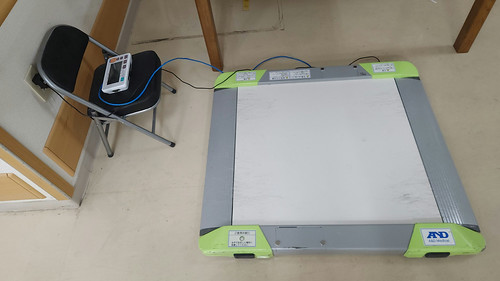
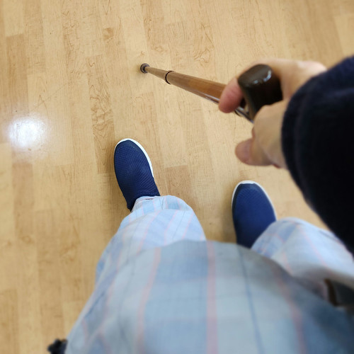
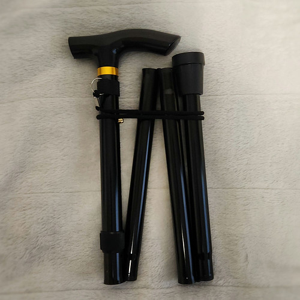
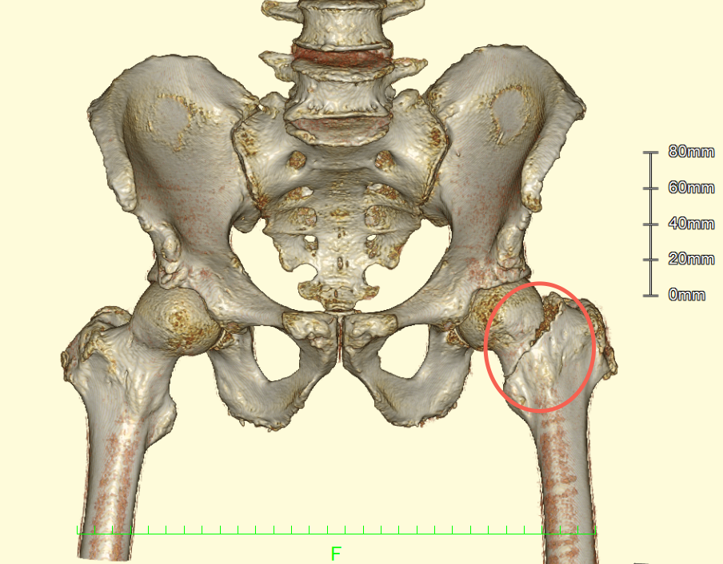
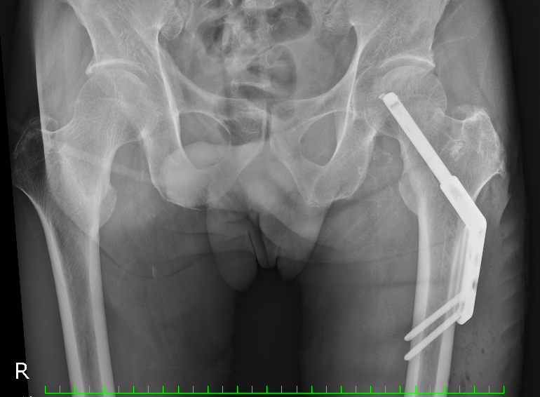

骨折入院（後編）

退院して１ヶ月以上経ってしまったけど，いい加減このシリーズも締めてしまおう。
というわけで遅ればせながら
リハビリの話
どこまで話したっけ？ 今回はリハビリの話をメインに進めていこう。
手術後のスケジュールはこんな感じだった。
- 手術後4週間は免荷
- その後2周間は 1/3 荷重
- 更にその後2週間は 2/3 荷重
- 更に更にその後は全荷重解禁
免荷および 1/3 荷重状態では車椅子必須で歩行訓練で松葉杖を使う感じ。 体重も車椅子ごと測ったり。

2/3 荷重からは車椅子も不要になり松葉杖も片方のみの運用に，1月末にようやく全荷重解禁で松葉杖もなくなりステッキで歩けるようになった。

リハビリメニューは，だいたい同じ。 マッサージ→ストレッチ→筋トレ→歩行訓練 の順番で，これを毎日繰り返す感じ。 いやぁ，ただ歩くだけでもたくさんの筋肉が協調してるんだねぇ。 スゴい勉強になったよ。 引きこもり体質の私が筋肉の勉強をすることになろうとは（笑）
退院後のこと
全荷重解禁後はすぐにでも退院したかったのだが，色々と手続きもあり退院は2月の上旬に。 その頃にはトイレに行く程度なら杖なしで歩けるようになった。 とはいえ，長時間歩くのはまだまだ難しいので，退院後は外出時は母親の予備の杖を借りている。 もう少し杖なしで歩けるようになったら使えるように，折りたたみの杖も買っている。

こうやってちょっとずつ行動範囲を広げている。 春のうちに自転車に乗れるようになるといいんだけどねぇ。
骨折画像貰った
そうそう。 退院時にCTスキャンとX線撮影の画像（転院時の申し送りデータ）を貰ったのですよ。 「要らないなら（個人情報なので）媒体を廃棄処分するけどどうする？」と言われたのでありがたく頂いた。
以下は入院した直後に撮ったCTスキャンから作成したCG画像。

丸で囲ってる部分が折れてるところ。 X線画像よりも細かいところまで表現されていて，最初の状況の説明でこれを見せてもらって「CTすげー！」って思った。
で，以下が手術直後のX線画像。

割とゴツいものが入ってます。 こいつと一生付き合うわけですな。